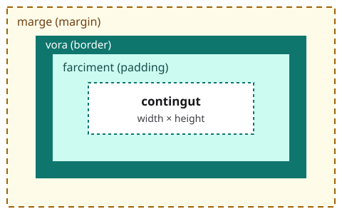

El model de caixa
En acabar aquest capítol sabràs controlar l'espai de la pàgina: el farciment, la vora i el marge de cada element, la seva amplada, i si ocupa tota la línia o només el seu tros.
Cada element és una caixa
El navegador dibuixa cada element com una caixa rectangular, amb quatre capes:

- El contingut: el text o les imatges de l'element.
- El farciment (
padding): l'espai entre el contingut i la vora. Té el color de fons de l'element. - La vora (
border): la línia que envolta el farciment. - El marge (
margin): l'espai de fora de la vora, que separa la caixa de les altres. És transparent.
Canvia els números i mira què passa amb cada capa. Prova també de treure el color de fons: el farciment continua allà, però ja no es veu.
Farciment i marge
padding i margin admeten d'un a quatre valors:
padding: 1rem;→ els quatre costats.padding: 0.5rem 1rem;→ dalt i baix 0.5rem; dreta i esquerra 1rem.padding: 0.5rem 1rem 2rem;→ dalt 0.5rem; dreta i esquerra 1rem; baix 2rem.padding: 0.5rem 1rem 2rem 3rem;→ dalt, dreta, baix i esquerra, en el sentit de les agulles del rellotge.
Els valors se separen amb espais, sense comes. Per a un sol costat hi ha padding-top, padding-right, padding-bottom i padding-left (i igual amb margin). El farciment no pot ser negatiu; el marge, sí: un marge negatiu acosta les caixes.
Els dos avisos estan separats 1rem, no 2rem: quan el marge de baix d'una caixa toca el de dalt de la següent, no se sumen, sinó que guanya el més gran.
La vora
borderporta tres valors: el gruix, l'estil i el color:2px solid teal.- Estils:
solid(contínua),dashed(de guions),dotted(de punts) idouble(doble). Sense estil, la vora no es dibuixa. - Per a un sol costat:
border-top,border-right,border-bottomiborder-left. border-radiusarrodoneix les cantonades.
L'amplada i box-sizing
Tots dos paràgrafs tenen width: 200px, però el primer és més ample. Per defecte, width és
l'amplada del contingut, i el farciment i la vora s'hi afegeixen: 200 + 2 · 20 + 2 · 5 = 250 píxels.
Amb box-sizing: border-box, width és l'amplada de tota la caixa, vora inclosa: 200 píxels.
Com que és molt més fàcil de calcular, molts fulls d'estil comencen així (el selector * vol dir «tots els elements»):
* {
box-sizing: border-box;
}
I amb una amplada i els marges dels costats a auto, una caixa queda centrada: el navegador reparteix l'espai que sobra a parts iguals.
En bloc o en línia
-
Els elements de bloc (
p,h1,ul,li,nav,section,div…) comencen en una línia nova i ocupen tota l'amplada. -
Els elements en línia (
a,span,strong,em…) van dins del text i només ocupen el seu tros. No tenen amplada ni alçada (widthiheightno hi fan res), i els marges i el farciment de dalt i de baix no aparten les línies.
La propietat display ho canvia:
display: block: l'element es comporta com un bloc.display: inline: es comporta com un element en línia.display: inline-block: va en línia, com un tros de text, però és una caixa sencera: té amplada, i el farciment i els marges aparten el que té al voltant.display: none: l'element no es mostra i no ocupa cap lloc.
Prova d'esborrar display: inline-block: els enllaços ja no eixamplen el menú, i el seu fons surt per dalt i per baix de la franja verda.
Una escala d'espais
Una pàgina queda més endreçada quan fa servir sempre les mateixes poques mides d'espai. Guarda-les en variables:
Canvia el valor de --espai: tots els llocs que el fan servir canvien alhora, i les proporcions es mantenen.
Errors típics
Aquests exemples tenen errors. Mira el resultat i llegeix el panell ⚠ Problemes.
La vora no es veu
Hi ha el gruix i el color, però falta l'estil (solid, dashed…), i sense estil el navegador no dibuixa la vora.
Amplada en un enllaç
Els enllaços són elements en línia: width no hi fa res. Amb display: inline-block, sí.
Una drecera que n'esborra una altra
margin: 0 posa a 0 els quatre marges, també el de dalt que s'havia escrit just abans.
Un farciment negatiu
El farciment no pot ser negatiu, i el navegador ignora la declaració.
Comes entre els valors
Els valors de padding i margin se separen amb espais: 1rem 2rem.
Exercici: les targetes del club de lectura
Dona espai a la pàgina del club de lectura:
- a
:root, defineix les variables--espai-petit(0.5rem) i--espai(1rem); - posa
box-sizing: border-boxa tots els elements; - converteix els llibres (
.llibre) en targetes: farciment devar(--espai), una vora, cantonades arrodonides i unmargin-bottomdevar(--espai)per separar-les; - fes que els enllaços del menú (
nav a) siguininline-blocki tinguin farciment; - cap error ni cap avís al panell ⚠ Problemes.
Quan acabis, prem ✓ Comprova.
Troba l'error
El menú del menjador hauria d'estar centrat i separat 2rem de dalt, cada plat hauria de tenir una vora contínua de
color tomàquet, un farciment d'1rem i un marge d'1rem a dalt i a baix, i els preus haurien de ser unes etiquetes de
4rem d'amplada. Hi ha cinc errors a estils.css. Arregla'ls amb l'ajuda del panell ⚠ Problemes, i quan
acabis prem ✓ Comprova.
Resum
- Cada element és una caixa: contingut, farciment (
padding), vora (border) i marge (margin). paddingimarginadmeten d'1 a 4 valors (dalt, dreta, baix, esquerra), separats amb espais. Dos marges verticals que es toquen no se sumen.border: gruix, estil i color (2px solid teal);border-radiusarrodoneix les cantonades.- Amb
box-sizing: border-box,widthés l'amplada de tota la caixa.margin: 0 autocentra una caixa que té amplada. - Elements de bloc i en línia;
displayho canvia (block,inline,inline-block,none). - Poques mides d'espai, guardades en variables.